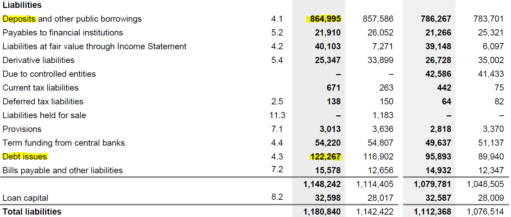
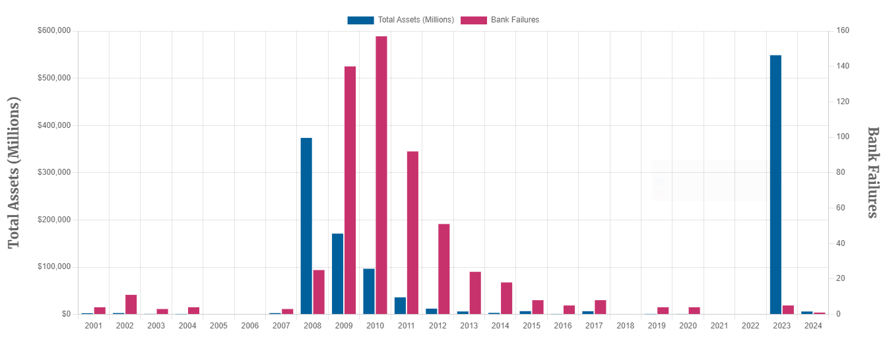

viewof maturity4 = Inputs.range(
[1, 30],
{value: 15, step: 1, label: "Maturity (years):"}
)
viewof couponRate4 = Inputs.range(
[0.01, 0.2],
{value: 0.05, step: 0.01, label:"Coupon rate:"}
)
d = {
const f = 100;
let c, m;
c = couponRate4;
m = maturity4;
function pv(c, f, t, r) {
return c * (1 - (1+r)**(-t)) / r + f / (1+r)**(t)
}
const prices = {"YTM": [], "Price": []};
let coupon = f * c;
for (let ytm = 0.01; ytm < 20; ytm++) {
let price = pv(coupon, f, m, ytm/100);
prices["YTM"].push(ytm);
prices["Price"].push(price);
}
return prices;
}
data4 = transpose(d)
Plot.plot({
caption: "Assume $100 bond, annual coupons paid in arrears and effective annual discount rate.",
x: {padding: 0.4, label: "YTM (%)"},
grid: true,
marks: [
Plot.ruleY([0, 100]),
Plot.ruleX([0]),
Plot.lineY(data4, {x: "YTM", y: "Price", stroke: "blue"}),
]
})AFIN8003 Week 2 - Risks and Regulation
Banking and Financial Intermediation
AFIN8003
2025S1
Lecture
Introduction
Banks need regulation
DIs (banks, interchangeably) are financial institutions chartered to take deposits from the public and grant loans simultaneously. They are necessary in an economy achieving efficient allocation of financial resources.
However, we also note that
- the banking structure itself could cause financial fragility (Diamond and Dybvig 1983).
- the collapse of bank credit contributes to economic crisis (Bernanke 1983).
Therefore, bank failures have significant negative externality. As a result, banks are heavily regulated.
Banking regulations
What types of regulations are needed or in place for banks?
- entry and chartering
- safety and soundness
- credit allocation
- consumer and investor protection
- …
An example: entry and chartering regulation
Economic theories generally view competition as improving social welfare. But it is not necessarily true for the banking sector.
- Consider the location model of Salop (1979).
- Free entry leads to too many banks that is sub-optimal.
- Increasing bank costs (e.g., higher reserve requirements) does not limit bank numbers.
- Charters (business license) could help.
- Chartering also helps with other regulations.
The GFC and the new banking regulatory landscape

- The Global Financial Crisis (2007-2009) caused the Great Recession that persistently undermines the economy.
- The regulations were unable to prevent the collapse of the banking sector.
- New regulatory framework, Basel III, established in response.
The new banking regulatory landscape
Before GFC, the banking regulations primarily focused on prudential regulations concerning the risks of individual banks.
- Capital adequacy: sufficient capital to cover potential losses.
- Risk management: ability to manage various risks such as credit, market, and operational risks.
- Liquidity management: enough liquid resources to meet immediate obligations.
Post-GFC, the banking regulations have expanded to include macroprudential regulations.
- Systemic focus: greater emphasis on understanding and mitigating systemic risks that could destabilize the entire financial system.
- Countercyclical policies: measures introduced to mitigate the procyclical effects of previous regulatory approaches.
- Stress testing: system-wide tests to assess the resilience of the financial system to shocks.
Risks of DIs
Banking and trading books
A bank has a banking book and a trading book, two different ways to categorize financial assets and liabilities, each governed by different management strategies and regulatory standards.1
- Banking book
- Assets and liabilities that the bank intends to hold for the long term.
- Primarily used for traditional banking activities, e.g., lending and taking deposits.
- Trading book
- Assets and liabilities that the bank intends to trade actively.
- The value and income from these assets are driven by market conditions and short-term price movements.
What risks do banks face?
The most simplified balance sheet of a bank:
| Assets | Liabilities and Equity |
|---|---|
| Loans | Deposits |
| Other assets | Other liabilities |
| Equity |
- Risks on the assets side.
- Risks on the liabilities and equity side.
- Other risks beyond the balance sheet.
Risks on the assets side
- Loans
- Other assets (bonds, investment securities, derivatives)

Risks on the assets side - loans
Loans are often in the banking book and reported based on amortised book value.
Major risks due to uncertainties in:
- Borrower’s creditworthiness, credit risk
- Interest rate when rolling over / repricing the loans, interest rate risk
- Exchange rate if loans are denominated in foreign currencies, foreign exchange risk
- Ability to liquidate the loans, liquidity risk
- …
Risks on the assets side - other assets
Bonds, derivatives, investment securities, …
For example, a bond’s price is given by
\[ P = \sum_{t=1}^T\frac{C}{(1+r)^t} + \frac{F}{(1+r)^T} \tag{1}\]
where \(C\) is coupon payment, \(F\) face value, \(T\) maturity, and \(r\) interest rate.
Risks due to uncertainties in:
- \(C\) and \(F\), credit risk
- \(r\), interest rate risk
Many are on the trading book.
- Market risk
- Liquidity risk
Risks on the liabilities and equity side
- Deposits
- Other liabilities (primarily debts)

Risks on the liabilities and equity side - deposits
Deposits are the most important funding source of banks - 60% for Australian banks.
- Non-interest bearing deposits.2
- On-demand and short-term deposits.
- Term deposits.
- Certificates of deposits.
Risks involved:
- Interest rate risk
- Liquidity risk
- If foreign currencies, foreign exchange risk
{kind=link}
Risks on the liabilities and equity side - debts
Debts are also an important funding source of banks.
- Account for about 30% of bank funding in Australia.
Risks involved:
- Interest rate risk
- Liquidity risk
- If foreign currencies, foreign exchange risk
Risks on the liabilities and equity side - equity
Equity, assets value minus liabilities.
- Insolvency risk
- Manifestation of many other risks - a focus of banking regulations
- Interest rate risk: changing interest rates cause disproportionate changes in assets value and liabilities value.
- Market risk: losses from adverse changes in market conditions, such as interest rate fluctuations or stock market declines.
- Credit risk: high default rates on loans and other credit products can erode asset values.
- Liquidity risk: inability to convert assets into cash quickly without significant losses.
- Operational risk: losses stemming from failed internal processes, systems, human errors, or external events.
- Concentration risk: overexposure to a specific borrower, industry, or geographic region.
Risks beyond balance sheet
Many other risks:
- ESG risk
- Cybersecurity risk
- …
Note
See how NAB discusses risk factors, p89 of its annual report 2023.
Bank failure
Bank failure occurs when a bank is unable to meet its obligations to its depositors or other creditors and either goes bankrupt or must be taken over by a financial regulatory body to avoid bankruptcy.

Silicon Valley Bank (SVB) failure
SVB’s failure in March 2023 is the largest failure since GFC.
- Concentration risk: highly concentrated client base primarily in the tech and VC sectors
- Interest rate risk: a large amount of long-duration assets, like U.S. Treasury bonds and mortgage-backed securities, which decreased in value as interest rates rose sharply.
- Liquidity risk: rising interest rates led to a mismatch in the liquidity profile as SVB’s assets (long-term bonds) lost value while liabilities (deposits) demanded immediate liquidity.
- Market risk: capital raising through asset sales and stock offerings poorly received by the market.
- Bank run: news of the bank’s difficulties led to a rapid and large-scale withdrawal of deposits by clients, creating a classic bank run.
Bank risks - our approach
In this course, we will examine bank risks one by one in a three-step framework:
- Identify: definition, source and nature
- Measure: ways to gauge the exposure
- Manage: strategies to mitigate
Regulations of DIs
Regulations of banks
Failure of banks has significant negative externality.
- Loss of deposits for savers
- No credit supply for borrowers
- Impact on real economy
- Global Financial Crisis (GFC) 2007-2009
Broadly, banking regulations can be classified into two aspects:
- Microprudential regulations: safety and soundness of individual institutions
- Macroprudential regulations: stability of the financial system
The two aspects are not mutually exclusive, but complementary.
Prudential regulations
Microprudential regulations
- Focus:
- Targets the safety and soundness of individual financial institutions.
- Objectives:
- Prevent the failure of banks and other financial entities.
- Protect consumers’ deposits and maintain confidence in the financial system.
- Methods:
- Setting capital adequacy requirements.
- Enforcing liquidity requirements to manage short-term obligations.
- Implementing risk management standards and supervisory review processes.
- Conducting regular inspections and audits of individual institutions.
Macroprudential regulations
- Focus:
- Aims at the stability of the financial system as a whole.
- Objectives:
- Prevent systemic risks and financial crises that affect the entire economy.
- Reduce financial system vulnerabilities from interconnectedness and procyclical tendencies.
- Methods:
- Implementing caps on overall credit growth and sector-specific loan concentrations.
- Using stress tests that simulate adverse economic scenarios to gauge system-wide resilience.
- Applying countercyclical capital buffers that increase during economic booms and decrease during downturns.
Finally…
Suggested readings
- History of BIS
- Origins of the Reserve Bank of Australia
- Basel Framework - Risk-based Capital Requirements (RBC), RBC25 Boundary between the banking book and the trading book
- Banks’ funding costs and lending rates
- FDIC bank failures
- About APRA
- ASIC website
- MoU between the Treasury and the APRA
References
Bernanke, Ben S. 1983. “Nonmonetary Effects of the Financial Crisis in the Propagation of the Great Depression.” The American Economic Review 73 (3): 257–76.
Diamond, Douglas W., and Philip H. Dybvig. 1983. “Bank Runs, Deposit Insurance, and Liquidity.” Journal of Political Economy 91 (3): 401–19.
Salop, Steven C. 1979. “Monopolistic Competition with Outside Goods.” The Bell Journal of Economics 10 (1): 141.